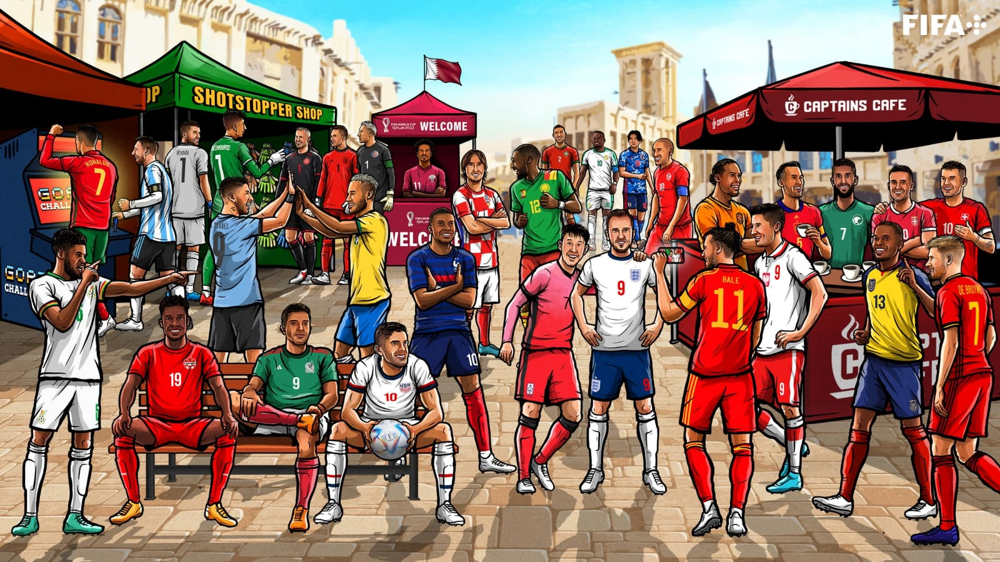

Espanha-Europa
6 de dezembro de 1978.
N⁰ de copas: 1
Japão-Asia
11 de fevereiro de 660 A.C
N⁰ de copas: 0
Alemanha-Europa
23 de maio de 1949
N⁰ de copas: 4
Costa Rica-America
15 de setembro de 1821
N⁰ de copas: 0